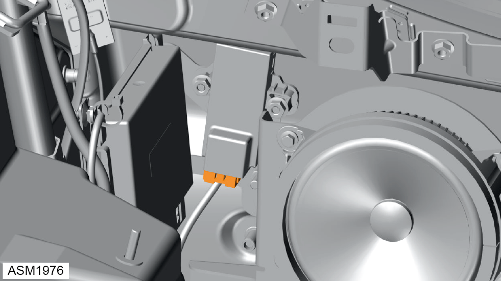
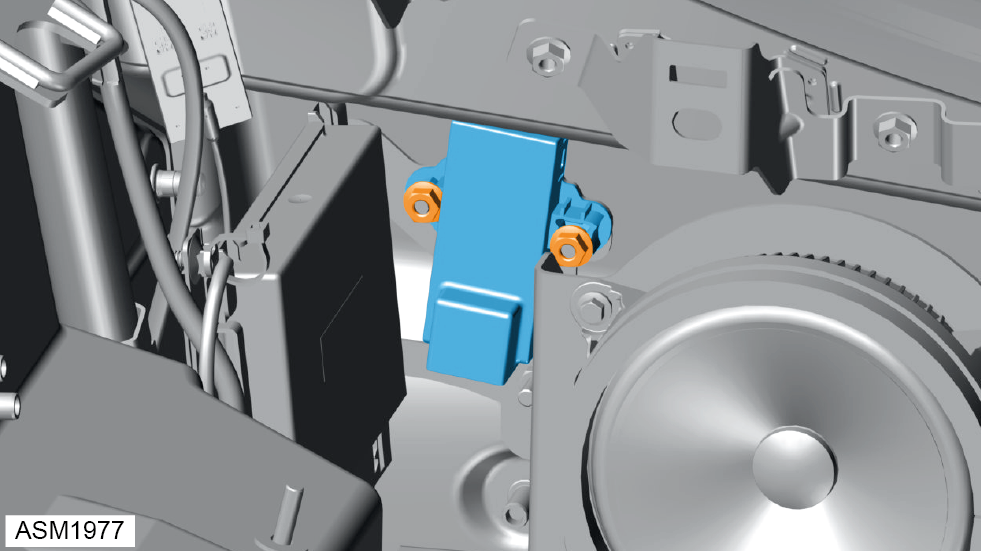

Module - Start Switch - 4 Cylinder
Print
Operation Code: 17.33.29-02
Removal
- Remove rear quarter trim. Refer to procedure.

- Disconnect harness connector from start switch module.
- Remove M6 nuts (x2) securing start switch module to vehicle.

- Remove start switch module.
Installation
- Installation is the reverse of removal procedure except for the following:
- After installation perform a diagnostic read and clear error memory using Lotus Insight tool.
NOTE: Register module using Lotus Insight tool.